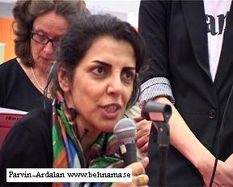
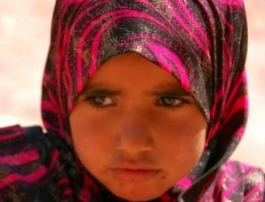
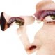
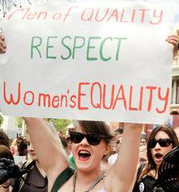

تغییر برای برابری
تغییر برای برابریمداخله گری فمینیستی با مستعمره سازی و لشکرشی نظامی از یک کشور به کشور دیگر نیز متفاوت است. این دو نوع اخیر، سلطه طلبانه است، باقدرت سروکار دارد، در صدد نابرابر سازی و طبقاتی کردن سطوح است. مداخله گری فمینیستی با فرهنگ کار دارد، نمی گوید :"خشونت علیه زنان امری فرهنگی است" خشونت را در کانتکس جامعه بررسی می کند اما نه آن که آن را به مثابه امری فرهنگی بپذیرد! و آدم ها را در همان چارچوب تعریف کند...
پذيرش > واژه كليدها > صفحه بندی > ستون وسط
ستون وسط
مقالهها
-

چه کمکی می توانیم برای شما انجام دهیم؟ دست کمک یا همبستگی؟ / پروین اردلان
23 مارس 2012 -

مبارزه زنان اردنی برای کسب حق تابعیت برابر
21 فوريه 2012همانند سایر کشورهای همسایه، کشور اردن نیز قوانین تبعیض آمیز علیه زنان بسیار دارد . علیرغم اینکه قانون اساسی کشور تابعیت را به عنوان یک حق انسانی به رسمیت می شناسد، اردنی ها به واسطه جنسیتشان مورد رفتار تبعیض آمیز قرار می گیرند. مردهایی که با زنان غیراردنی ازدواج می کنند و صاحب فرزند می شوند ، تابعیتشان نیز به فرزندانشان منتقل می شود، اما به زنان این اجازه داده نمی شود...
-

راه دشوار نجات؛ از تجربه ی خشونت تا سلامت
7 دسامبر 2011همه ی ما باید بدانیم که در اطراف ما زنانی هستند که رنج می کشند و تنها به دلیل نبود همین حمایت ها، سال ها در رابطه ای خشونت آمیز می مانند و تحمل می کنند. آن تعدادی که خود را از چرخه¬ی خشونت بیرون می کشند، پس از آن با مشکلات طاقت فرسایی روبرو می شوند. در نبود حمایت های نظامند شاید این وظیفه¬ی ما باشد که با ساختن و گسترش شبکه های حمایتی، این زنان را تا حد ممکن حمایت کنیم و همیشه به خاطر داشته باشیم که مجازات فرد خشونت ورز یا بیرون آمدن از چرخه ی خشونت هرگز پایان راه برای زنانی که این تجربه را از سر گذرانده اند نیست...
-
 ویژه نامه روز جهانی زن
ویژه نامه روز جهانی زن
8 مارس 2013تغییر برای برابری : سالی که گذشت، اتفاقات زیادی در حوزه ی زنان افتاد، اتفاقاتی که به زعم بسیاری از فعالان این حوزه موجب عقبگردیهای قانونی و ساختاری در مسائل مربوط به حوزهی زنان شد. اشتغال یکی از این مسائل بوده است.
-
 سمیه رشیدی آزاد شد
سمیه رشیدی آزاد شد
25 فوريه 2010سمیه رشیدی، فعال کمپین یک میلیون امضا برای تغییر قوانین تبعیض آمیز، امروز ۶ اسفند ماه از زندان
اوین آزاد شد. -

راهپیمایی"هرزه ها"علیه خشونت جنسی، در اعتراض به اظهارات پلیس در سراسر جهان
23 ژوئن 2011اعتراضات زنان به اظهارات پلیس تورنتو که گفته بود "اگر زنان نمی خواهند مورد تعرض جنسی واقع شوند لباسهائی مانند لباس هرزه ها نپوشند" در گوشه و کنار جهان ادامه دارد.این اعتراضات از تورونتو، کانادا آغاز شد و در حا ل حاضر به سایر نقاط جهان مانند هند، برزیل و هندوراس نیز سرایت کرده است.
-
 نابرابری حقوق زن ومرد در محیط کاراز عوامل بیماری زنان/ ژیلا افتخاری
نابرابری حقوق زن ومرد در محیط کاراز عوامل بیماری زنان/ ژیلا افتخاری
5 فوريه 2013عدم تساوی حقوق زن و مرد در محیط کار می تواند یکی از عوامل بیماری گروههایی از زنان در مقایسه با مردان باشد. سوفیا الور، تحقیقاتی رادر این زمینه در انسیتوی سلامتی عمومی دانشگاه امئو، سوئد انجام داده است. وی شاخص های برابری در محیط کار را شناسایی کرده وچگونگی ارتباط آن با احساس سلامتی و بیماری را مورد بررسی قرار داده است. زنان و مردانی که از دستمزد برابر برخوردار بوده و بطور مساوی از مرخصی نگهداری کودک *استفاده کرده اند سالمتر بوده و در محیط کار آنان مشکلات روحی مانند نگرانی و اضطراب کمتر دیده می شد...
-
بررسی نظری پدیده "لباس شخصی ها" یا کلیک در چارچوب جامعه شناسی سیاسی
23 اوت 2009, بوسيلهى pariاز آنجایی که در کشور های اسلامی از جمله ایران هنوز تصور از اخلاق مطابق متون مقدس ( قرآن، سنت، احادیث) باز تعریف شده و شدیدا حول و حوش زن و پیکر او متمرکز است ، در مقابل تغییرات اجتماعی بعد از مدرن مقاومت کرده وتلاش دارد تغییرات اجتماعی حاصل از مدرن را تحت عنوان بی اخلاقی و نابودی ارزش های بومی ( بخصوص پیرامون زن و حوزه عمومی ) ، لجام زده آن را در چارچوب فهم خود از اخلاق( مذهبی) تعریف کنند.
-
 ضرورت تدوین یک چارچوب ایجابی بدیل برای ایجاد مناسبات برابر/ کاوه مظفری
ضرورت تدوین یک چارچوب ایجابی بدیل برای ایجاد مناسبات برابر/ کاوه مظفری
27 اوت 2009, بوسيلهى pariمردم ناگزیرند که به «زندگی روزمره» خود بازگردند. همان جایی که نابرابری های موجود همچنان بازتولید می شوند؛ و با وجود شعارهای بزرگ [و مبهم]، هنوز مسائلی انضمامی دغدغه روزمره بسیاری از مردمان است. به همین جهت است که «جدال سنگر به سنگر» برای تغییر مناسبات موجود رویه ای اجتناب ناپذیر است.
-
ضرورت هایی بیولوژیک و فناورانه و نه مطالباتی آرمانی و اتوپیایی/ ناصر فکوهی
9 اوت 2009, بوسيلهى pariادر این فرایند عمومی که به نظر من کل جامعه را در بر می گیرد و نه لزوما یک بحث طبقاتی است و نه لزوما به ساختارهای شهر و روستا مربوط می شود، دو گروه جوانان و زنان، که عمدتا در قالب زنان شهرنشین طبقه متوسط متبلور می شود بیشترین نیاز را به سازوکارهای تقویت شده دموکراتیک احساس می کنند. همین امر باعث شده است که میان این دو گروه نوعی پیوند «طبیعی» برقرار شود که آن را در عمل می بینیم